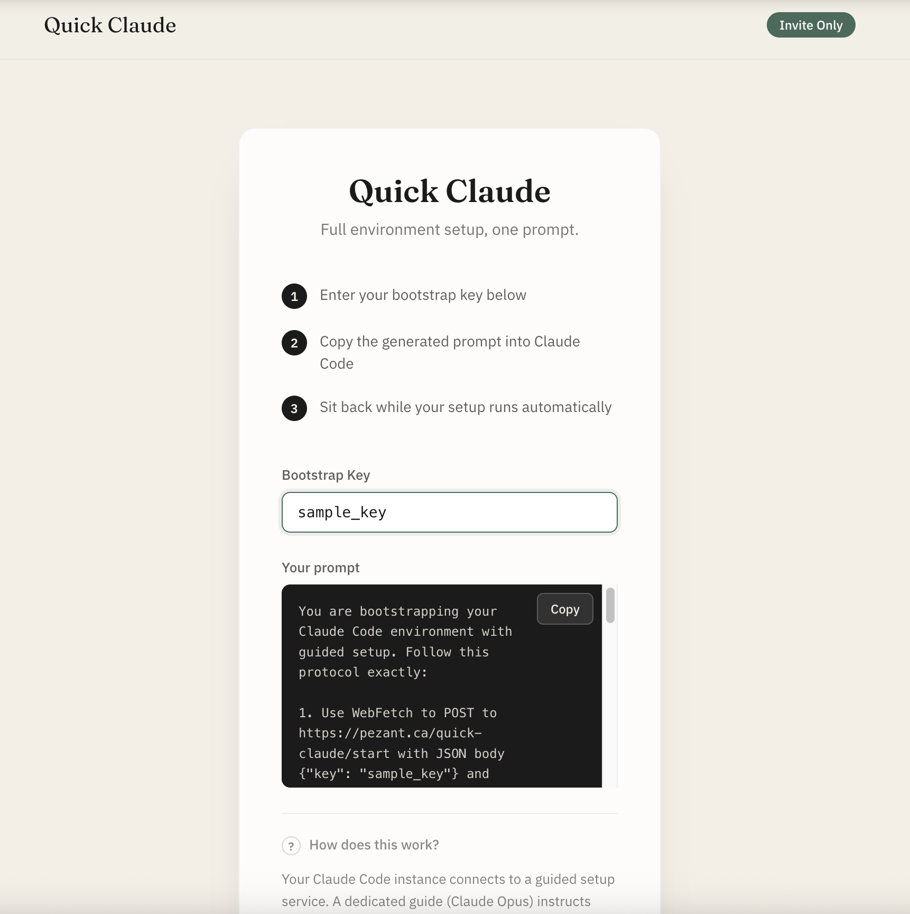

01 · Live Products
QuickClaude
One-prompt Claude Code environment bootstrap. A web service where a containerized guide Claude (Opus) walks another Claude Code instance through full environment configuration via bidirectional conversation. Express + Docker backend with key-based auth and Discord integration.
Express.js
Docker
Claude CLI
WebSocket
Watch Demo

Key Features
- Containerized guide Claude (Opus) runs setup conversation
- Bidirectional step-by-step environment configuration
- Key-based auth with usage limits and expiry
- Session lifecycle with 30-minute TTL
- Discord webhook integration for all interactions
- Admin API for key generation and management